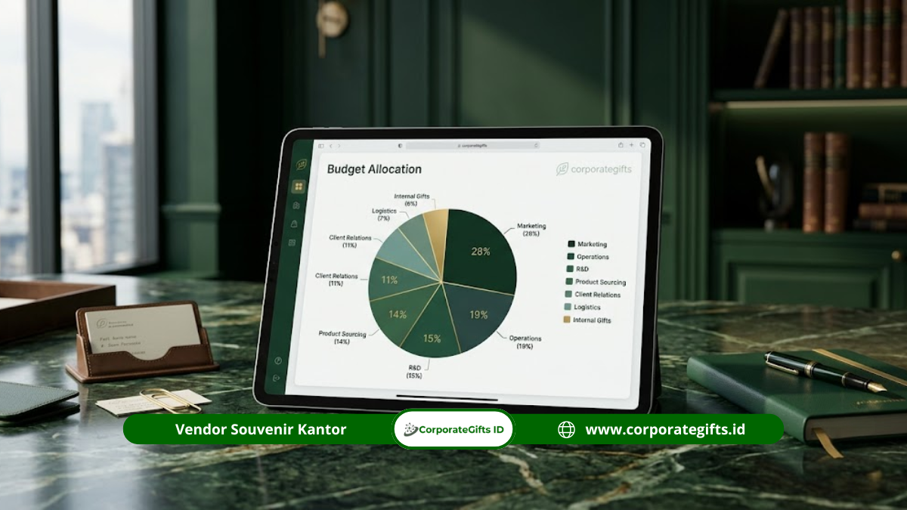

Corporate Gifts ID - Kesalahan umum dalam menganggarkan souvenir kantor meliputi memilih harga termurah tanpa mengecek kualitas, mengabaikan biaya tambahan seperti desain dan ongkos kirim, memesan tanpa buffer waktu produksi, serta tidak membandingkan penawaran vendor secara transparan. Menyusun checklist anggaran yang terstruktur sejak awal dapat mencegah pembengkakan biaya dan menjaga kesan profesional brand perusahaan.
Poin Kunci Anggaran Souvenir Kantor:
- Biaya Tersembunyi: Biaya tambahan seperti layout desain, cetak sparasi warna, dan ongkos kirim sering kali terlewat dari estimasi awal.
- Buffer Waktu: Pemesanan mendadak tanpa buffer waktu meningkatkan risiko penurunan kualitas pengerjaan dan keterlambatan pengiriman.
- Skala Acara: Anggaran souvenir kantor yang ideal sebaiknya disesuaikan dengan skala dan konteks acara, bukan disamaratakan untuk semua audiens.
- Checklist Terstruktur: Checklist pemeriksaan komponen biaya membantu tim procurement mengontrol pengeluaran agar tepat sasaran.
Mengapa Kesalahan Anggaran Souvenir Kantor Sering Terjadi dan Apa Dampaknya?
Kesalahan anggaran souvenir kantor sering terjadi karena perencanaan dilakukan terburu-buru tanpa data harga yang lengkap, dan dampaknya dapat berupa pembengkakan biaya hingga penurunan kesan brand di mata penerima.
Banyak tim procurement atau event organizer baru menyusun anggaran souvenir setelah detail acara lain selesai direncanakan, sehingga waktu yang tersisa untuk riset vendor dan perbandingan harga menjadi sangat terbatas. Akibatnya, keputusan sering diambil berdasarkan penawaran pertama yang diterima tanpa pembanding, atau berdasarkan estimasi harga lama yang sudah tidak relevan dengan kondisi pasar terkini.
Dampak jangka pendeknya terlihat pada anggaran yang membengkak di luar rencana, sementara dampak jangka panjangnya dapat berupa kesan kurang profesional terhadap brand perusahaan jika kualitas souvenir tidak sesuai ekspektasi penerima.
Sebagai ilustrasi, perusahaan yang baru memikirkan kebutuhan souvenir dua minggu sebelum acara seminar nasional sering terpaksa menerima harga dari vendor yang masih memiliki slot produksi kosong, tanpa kesempatan membandingkan penawaran dari vendor lain yang mungkin menawarkan harga atau kualitas lebih baik. Situasi seperti ini berulang setiap periode jika tidak ada evaluasi dan perencanaan yang lebih matang sejak awal.
Apa Saja Kesalahan Umum dalam Menganggarkan Souvenir Kantor?
Kesalahan umum dalam menganggarkan souvenir kantor mencakup delapan pola berulang, mulai dari fokus pada harga termurah hingga mengabaikan kebijakan garansi dan reorder dari vendor mitra.
1. Memilih Harga Termurah Tanpa Mempertimbangkan Kualitas dan Daya Tahan
Berfokus semata pada harga termurah sering mengabaikan kualitas material, sehingga souvenir mudah rusak, cepat pudar, atau terlihat kurang profesional saat diterima. Kesalahan ini paling terasa pada corporate gift yang diberikan kepada klien, karena kesan pertama terhadap kualitas produk turut mencerminkan citra perusahaan secara keseluruhan.
Sebagai contoh, memilih tumbler dengan harga jauh di bawah rata-rata pasar tanpa mengecek ketebalan material dapat berisiko menghasilkan produk yang mudah penyok atau cepat berkarat setelah beberapa kali pemakaian, yang justru menimbulkan kesan negatif dibandingkan jika perusahaan tidak memberikan souvenir sama sekali.
2. Mengabaikan Biaya Tambahan di Luar Harga Satuan Produk
Banyak perusahaan hanya menganggarkan harga satuan produk tanpa memperhitungkan biaya setting desain, tambahan warna cetak, ongkos kirim ke lokasi acara, maupun biaya kemasan box premium tambahan. Tanpa rincian biaya yang transparan dari vendor, total pengeluaran akhir sering melampaui anggaran awal yang telah disetujui manajemen.
3. Memesan Mendadak Tanpa Buffer Waktu Produksi
Pemesanan yang dilakukan terlalu mendekati hari acara meningkatkan risiko kualitas produksi yang kurang maksimal, ketersediaan stok material yang terbatas, dan minimnya waktu untuk revisi apabila terjadi kesalahan cetak. Buffer waktu yang cukup memberi ruang bagi vendor untuk melakukan kontrol kualitas (QC) menyeluruh sebelum produk didistribusikan.
4. Memilih Kategori Souvenir yang Tidak Sesuai dengan Skala dan Konteks Acara
Memberikan souvenir kategori premium untuk acara seminar massal, atau sebaliknya memberikan souvenir terlalu sederhana untuk corporate gift klien strategis, sama-sama berisiko membuat anggaran tidak efisien terhadap tujuan acara. Kesesuaian kategori souvenir dengan konteks acara sebaiknya menjadi pertimbangan utama sebelum melihat daftar harga.
Sebagai contoh, memberikan gift set premium dengan personalisasi nama kepada 500 peserta seminar internal akan menghabiskan anggaran yang jauh lebih besar dibandingkan kebutuhan branding acara tersebut. Padahal souvenir kategori ekonomis seperti notebook spiral custom atau tote bag kanvas sudah cukup memenuhi tujuan acara dengan anggaran yang lebih terkendali.
5. Mengabaikan Price Break dan MOQ saat Menyusun Anggaran
Tidak memperhitungkan titik harga grosir atau price break membuat perusahaan berpotensi membayar lebih mahal per pcs dibandingkan jika jumlah pesanan disesuaikan sedikit lebih banyak. Memahami struktur Minimum Order Quantity (MOQ) vendor sejak awal membantu perusahaan menyusun anggaran yang lebih efisien tanpa mengorbankan kebutuhan jumlah penerima.
Sebagai contoh, memesan 90 pcs notebook custom bisa jadi memiliki harga satuan lebih tinggi dibandingkan memesan 100 pcs sekaligus karena belum mencapai titik price break vendor, sehingga total biaya untuk 90 pcs terkadang justru lebih mahal dibandingkan memesan 100 pcs dengan harga satuan yang lebih rendah.
6. Tidak Membandingkan Penawaran dari Beberapa Vendor Secara Transparan
Menggunakan satu vendor tanpa pembanding berisiko membuat perusahaan kehilangan kesempatan mendapatkan harga atau kualitas yang lebih baik. Membandingkan penawaran sebaiknya dilakukan dengan meminta rincian komponen biaya yang sama dari setiap vendor agar perbandingan benar-benar setara.
Idealnya, perbandingan dilakukan dengan menggunakan format permintaan penawaran (RFQ) yang sama ke setiap vendor, mencakup jenis produk, material, teknik cetak, jumlah pesanan, dan tenggat waktu produksi yang identik. Tanpa format yang seragam, perbandingan harga antar vendor menjadi tidak akurat karena setiap vendor mungkin menghitung komponen biaya secara berbeda.
7. Mengabaikan Kesesuaian Teknik Cetak dan Level Desain dengan Anggaran
Memilih teknik cetak atau level desain yang terlalu kompleks untuk volume pesanan besar, atau sebaliknya terlalu sederhana untuk corporate gift eksklusif, dapat membuat anggaran tidak proporsional terhadap tujuan acara.
Pembahasan lebih lengkap mengenai hal ini dapat dilihat pada panduan perbandingan harga souvenir kantor berdasarkan teknik cetak logo dan perbandingan harga souvenir kantor berdasarkan desain.
8. Tidak Mengecek Kebijakan Garansi dan Reorder Sebelum Menyepakati Pemesanan
Mengabaikan kebijakan garansi cacat produksi atau prosedur reorder apabila terjadi kesalahan cetak dapat membuat perusahaan kesulitan mendapatkan solusi ketika masalah muncul setelah barang diterima. Sebelum menyepakati pemesanan, pastikan vendor memiliki kebijakan yang jelas terkait penggantian produk cacat maupun prosedur reorder cepat apabila ditemukan kesalahan setelah barang sampai di lokasi acara.
Bagaimana Cara Menyusun Anggaran Souvenir Kantor yang Tepat dan Apa Checklist yang Perlu Diperhatikan?
Cara menyusun anggaran souvenir kantor yang tepat adalah dengan memetakan tujuan acara, jumlah penerima, dan kategori produk sejak awal, lalu memverifikasi setiap komponen biaya menggunakan checklist sebelum pemesanan dilakukan.

Penyusunan checklist komponen biaya dan buffer waktu produksi untuk mencegah pembengkakan anggaran souvenir perusahaan.
Langkah pertama adalah menentukan tujuan dan skala acara secara jelas, karena hal ini akan menentukan kategori harga, teknik cetak, dan level desain yang paling sesuai. Langkah kedua adalah mengumpulkan penawaran dari minimal dua hingga tiga vendor dengan rincian biaya yang setara, termasuk biaya desain, cetak, dan pengiriman.
Langkah ketiga adalah menyisihkan buffer anggaran tambahan untuk mengantisipasi biaya tak terduga seperti revisi desain atau penyesuaian jumlah pesanan menjelang hari acara. Langkah keempat yang sering terlewat adalah memetakan jadwal pemesanan terhadap tanggal acara secara mundur, dimulai dari hari pengiriman souvenir yang diinginkan, lalu dihitung mundur waktu produksi, waktu approval desain, dan waktu pengumpulan penawaran vendor.
Berikut checklist yang dapat digunakan tim procurement sebelum memesan souvenir kantor:
| No | Item Pemeriksaan | Catatan |
|---|---|---|
| 1 | Tujuan dan skala acara sudah ditentukan | Menentukan kategori harga dan jumlah penerima |
| 2 | Penawaran dari minimal 2-3 vendor sudah dibandingkan | Pastikan rincian biaya setara antar vendor |
| 3 | Biaya tambahan (desain, warna, ongkir) sudah dikonfirmasi | Hindari biaya tersembunyi di luar harga satuan |
| 4 | Teknik cetak dan level desain sesuai anggaran | Sesuaikan dengan konteks acara dan budget |
| 5 | MOQ dan price break sudah dipertimbangkan | Cek apakah menambah jumlah pesanan lebih efisien |
| 6 | Buffer waktu produksi minimal 3-4 minggu tersedia | Hindari pemesanan mendadak menjelang acara |
| 7 | Buffer anggaran 10-15 persen disiapkan | Mengantisipasi biaya tak terduga |
| 8 | Kebijakan garansi dan reorder vendor sudah dikonfirmasi | Antisipasi jika terjadi cacat produksi |
Checklist ini sebaiknya digunakan sebagai dokumen kerja bersama antara tim procurement, HR, atau event organizer sebelum menyetujui penawaran akhir dari vendor, sehingga setiap pihak yang terlibat memiliki pemahaman yang sama mengenai komponen biaya dan risiko yang sudah diantisipasi.
Apakah Kesalahan Anggaran Bisa Diperbaiki Setelah Pemesanan Dilakukan dan Bagaimana Mencegahnya di Periode Berikutnya?
Kesalahan anggaran yang sudah terjadi setelah pemesanan dilakukan umumnya sulit diperbaiki secara penuh, namun dampaknya dapat diminimalkan, dan pencegahan untuk periode berikutnya tetap bisa direncanakan sejak sekarang.
Jika kesalahan anggaran terdeteksi setelah produksi berjalan, opsi yang biasanya masih memungkinkan adalah negosiasi ulang dengan vendor terkait jadwal pembayaran atau penyesuaian jumlah pesanan untuk sisa kebutuhan, meski hasilnya tidak akan seideal jika direncanakan sejak awal.
Untuk mencegah kesalahan serupa terulang, sebaiknya perusahaan mendokumentasikan rincian biaya, vendor, dan kendala yang terjadi pada setiap periode pemesanan sebagai bahan evaluasi sebelum menyusun anggaran periode berikutnya. Dokumentasi ini idealnya mencakup nama vendor, rincian harga yang disepakati, kendala yang muncul selama proses produksi atau pengiriman, serta catatan apakah hasil akhir sesuai dengan ekspektasi awal.
Dengan data historis seperti ini, tim procurement dapat lebih cepat menentukan vendor dan kategori souvenir yang terbukti sesuai kebutuhan pada periode anggaran berikutnya, tanpa perlu mengulang proses riset dari awal.
Berapa Persentase Anggaran Ideal untuk Souvenir Kantor dan Bagaimana Menentukannya?
Persentase anggaran ideal untuk souvenir kantor umumnya mengikuti pola alokasi merchandise dan promosi fisik perusahaan secara keseluruhan, dan penentuannya sebaiknya disesuaikan dengan tujuan spesifik tiap acara.
Berdasarkan riset PPAI (Promotional Products Association International) tahun 2022, perusahaan umumnya mengalokasikan sekitar 15 hingga 20 persen dari total anggaran marketing untuk merchandise dan promosi fisik, termasuk souvenir kantor. Persentase ini dapat menjadi acuan awal, namun penentuan akhir tetap sebaiknya mempertimbangkan jumlah penerima, kategori souvenir yang dipilih, dan tujuan strategis acara, misalnya apakah souvenir berfungsi sebagai apresiasi internal karyawan atau sebagai investasi menjaga hubungan dengan klien strategis.
Sebagai gambaran penerapan, jika total anggaran marketing tahunan perusahaan sebesar Rp500 juta, alokasi 15 hingga 20 persen untuk merchandise dan promosi fisik berarti sekitar Rp75 juta hingga Rp100 juta tersedia untuk seluruh kebutuhan souvenir kantor dalam satu tahun, termasuk seminar internal, apresiasi karyawan, dan corporate gift klien. Pembagian anggaran ini kemudian dapat disesuaikan lagi berdasarkan jumlah dan jenis acara yang direncanakan sepanjang tahun.
Kesimpulan Praktis
Kesalahan umum dalam menganggarkan souvenir kantor sebagian besar dapat dihindari dengan perencanaan yang dimulai lebih awal, perbandingan vendor yang transparan, dan penggunaan checklist sebelum pemesanan dilakukan.
Beberapa langkah takeaways praktis yang dapat langsung diterapkan tim Anda:
- Perencanaan Dini: Mulai perencanaan anggaran souvenir kantor jauh sebelum hari acara, idealnya minimal satu bulan sebelumnya.
- Transparansi Biaya: Selalu minta rincian biaya lengkap dari beberapa vendor sebelum menentukan pilihan akhir.
- Gunakan Checklist: Gunakan checklist anggaran di atas sebagai panduan praktis sebelum menandatangani persetujuan pengadaan.
- Dokumentasi Evaluasi: Dokumentasikan setiap pengalaman pemesanan sebagai bahan evaluasi untuk periode berikutnya.
- Relevansi Kebutuhan: Sesuaikan kategori, teknik cetak, dan level desain souvenir dengan tujuan serta skala acara, bukan sekadar tren visual sesaat.
Jika perusahaan Anda membutuhkan bantuan menyusun simulasi anggaran souvenir kantor yang presisi, tim konsultan CorporateGifts.ID siap membantu memberikan estimasi transparan sesuai budget korporat Anda. Kunjungi katalog souvenir kantor untuk referensi produk lengkap siap custom logo.
Pertanyaan Seputar Anggaran Souvenir Kantor (FAQ)

Ditulis oleh: Arinda Zakia
Senior Corporate Gifting SpecialistSpesialis strategi merchandise korporat, kurasi hampers eksekutif, dan budgeting souvenir promosi B2B dengan pengalaman lebih dari 7 tahun membantu ratusan instansi dan korporasi di Indonesia.
Lihat Profil Lengkap & Panduan Lainnya